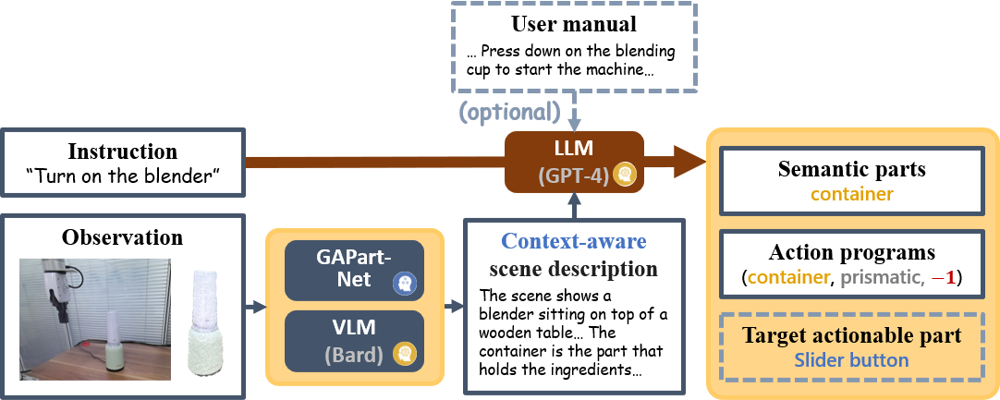
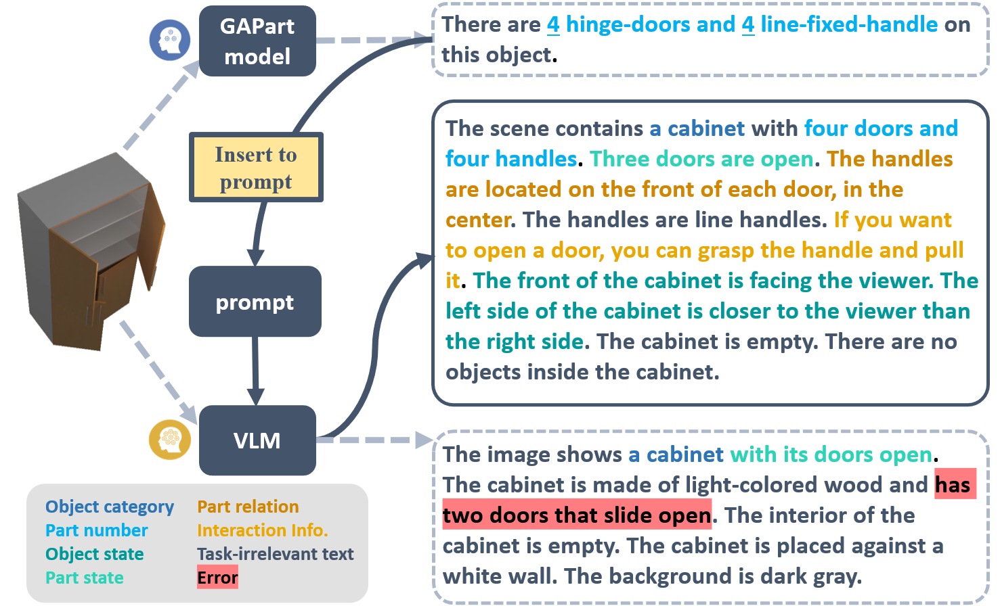
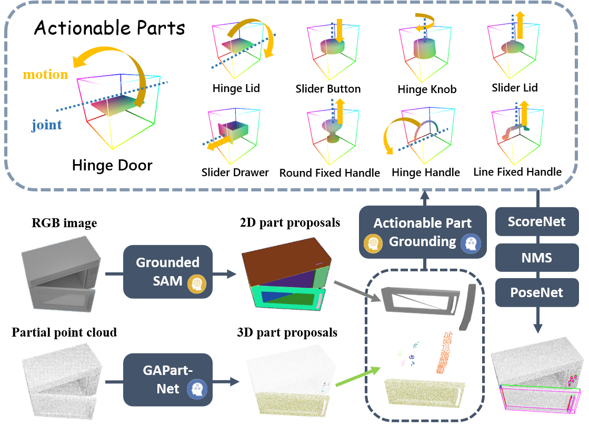
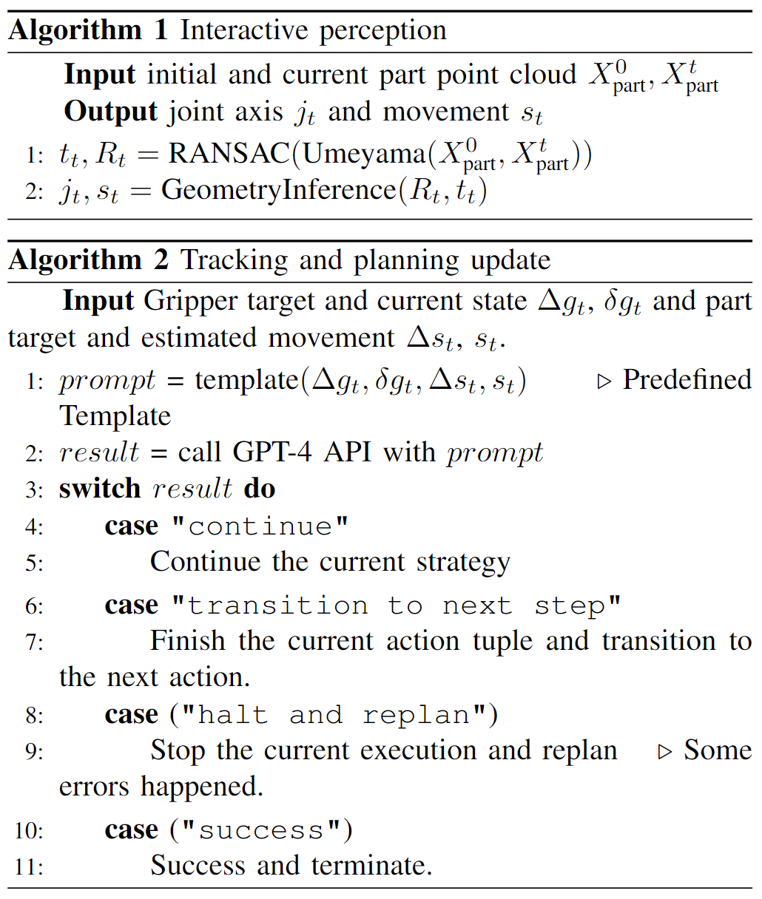
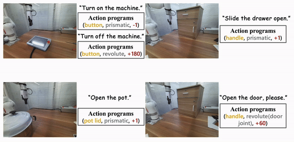
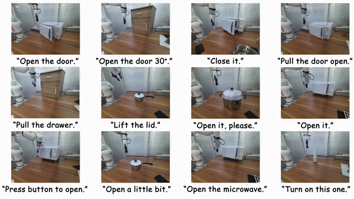

Summary
Video
Context-Aware Instruction Interpretation
With instruction and observation (RGBD image) as input, the interpreter first generates a scene description with VLM (Bard) and GAPartNet. Then LLM (GPT-4) takes both instruction and scene description as input and generates semantic parts and action programs. Optionally, we can input a specific user manual and LLM will generate a target actionable part.
The action programs are composed of so-called "action units", which are 3-tuples of
The whole action program should be in one of the following formats
or be a finite combination of the three formats. Here the "union" expression is for non-deterministic policy generation when multiple action units can reach the same goal, e.g. both pulling the door and pressing a button results in the microwave door being opened. "List" is for sequential action generation when no single-step solution exists, e.g. in order to open a door, a knob must be first rotated to unlock the door.
We also incorporate a visual input parser into our instruction interpretation process, which translates the RGB inputs into language descriptions that can be understood by LLMs. A naive solution is to directly employ a VLM to generate scene captions. However, we notice that most of these models lack the capability to provide exact task-related facts. Inspired by prior work, we recognize that the inclusion of expert facts can enhance the correctness of visual perception. Thus, we first detect the actionable parts using the GAPartNet segmentation model for actionable parts, and then pass it into the VLM together with the task description to generate a comprehensive scene description. Combining the expert knowledge of the specialist model and the general knowledge of VLM, we can acquire scene descriptions that are more accurate and also task-relate.
We conduct a user study to evaluate the scene descriptions in 6 different aspects. Our method joining the force of domain-specialist models and generalist VLMs achieves the best scores.

Part Grounding
We then convert the action programs defined on the object semantic parts into executable policies through a part grounding module that maps the semantic parts into so-called Generalizable Actionable Parts (GAParts), which is a cross-category definition of parts according to their actionabilities. To achieve this, we employ a large open-vocabulary 2D segmentation model and again combine it with a domain-specialist GAPart model by merging their part proposals and ground them together to GAPart labels.
Action Generation
Once we have grounded the semantic part to the actionable part, we can generate executable manipulations on this part. We first estimate the part pose as defined in GAPartNet. We also compute the joint state (part axis and position) and plausible motion direction based on the joint type (prismatic or revolute). Then we generate the part actions according to these estimations. We first predict an initial gripper pose as the primary action. It is followed by a motion induced from a pre-determined strategy defined in GAPartNet according to the part poses and joint states.
Interactive Feedback
Finally, we also introduce an interactive feedback module that actively responds to failed action steps and adjusts the overall policy accordingly, which enables the framework to act robustly under environmental ambiguities or its own failure.
Experiments
More interesting demos in our real-world experiments.
Leveraging general knowledge from large VLMs and expert knowledge from expert 3D models, our framework has strong generalization capabilities.
If you have any questions, please contact Haoran Geng (ghr@stu.pku.edu.cn).